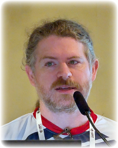

Support for private memory nodes

Specifically, he said that private memory must have a few attributes. The buddy allocator cannot fall back to it. Any allocations from that memory would have to be explicitly requested; the memory cannot be allocated to users otherwise. And kernel services should not touch folios placed in that memory in unexpected ways. The problem in current kernels is that the buddy allocator will fall back to specialized memory at times, and hot-plugged device memory is not exempt from that policy.
One possible solution would be to simply not add the device memory to the fallback lists. It is an easy and complete solution, he said. Allocations from that node would have to be requested explicitly. The downside is that there is no support for multi-node allocation; if there are two devices, any given call can only request memory from one of them. That makes it hard to interleave allocations across multiple private nodes, and also prevents allocation requests from falling back to ordinary RAM if the special memory is unavailable. At the same time, incidental allocations from the private nodes can still happen; there are multiple places in the kernel that use a for_each_online_node() loop to allocate memory on each available node, and that can't really be fixed.
The conclusion, he said, is that just removing private nodes from the fallback lists is a fragile solution. David Hildenbrand asked if the for_each_online_node() pattern is correct; Price answered that any pattern like that is probably broken, but it will still be widespread regardless. John Hubbard said that the code was perfect when it was written, but the world has changed around it. Price said, though, that the pattern was broken from the beginning, since it assumes uniformity among NUMA (being non-uniform memory access) nodes.
Price's preferred alternative would be to add a new allocation flag, __GFP_PRIVATE, that enables allocation from a private node. If the allocation fails, the allocator would fall back to ordinary RAM, ensuring that allocation requests succeed even if the preferred node has no available memory. Kiryl Shutsemau said that this approach was working around broken allocation patterns, and that it would be better to fix them. Price answered that he had tried, but there is a lot of code to look at; he could spent two years at it and still not be done. If __GFP_PRIVATE is not acceptable, he said, he would simply stop trying because he does not see another way to solve the problem.
Johannes Weiner suggested adding special iterators to select only nodes with a CPU or nodes with memory. Price asked how that would help with existing iterators — a list that includes every call to alloc_pages_node(). It is, he said, an impossible situation to police. Matthew Wilcox said that private-node allocation didn't look like a proper use for a GFP flag; perhaps reusing GFP_DMA, which is not really needed on current systems, would be a better approach. Price answered that he doesn't care about the details as long as he has a way to access the private node.
Hildenbrand asked what sort of code should be able to allocate from private nodes, and whether it would be possible to restrict the use of private-node memory to folios, which would simplify the problem somewhat. Price said he needs to see more users of this functionality to be able to answer that question. Jason Gunthorpe said that some sort of driver-specific handle might be a better way to request private memory than using a GFP flag, but Price said that he still needs allocations to fall back to regular memory.
Moving on, Price said that another problem that comes up is that other
parts of the kernel can touch private memory in surprising ways. NUMA
balancing, for example, will set the page protection to PROT_NONE
to detect accesses, with "nasty results
". Memory compaction may
migrate the page out of private memory. Many of these problems have
already been solved for ZONE_DEVICE memory; that solution can be
extended by checking for private memory in the same places. The default
would be to opt out of most memory-management functionality, but Price
proposed adding some node attributes that would request, for
example, NUMA balancing or working reclaim.
Price concluded by repeating that he needs a GFP flag, or some equivalent,
or he will have to just give up on the problem. He is working on a minimum
viable patch that includes a single flag to opt into NUMA balancing. He
would like to add reclaim support too, but "reclaim is actually five
chipmunks in a trench coat
". He would like to be able to opt into the
attention of some of those rodents (compaction, for example, or tiering)
without getting the whole thing. Compaction would require a special
callback to tell the device that a folio has moved.
At the close of the session, Shutsemau asked what would happen if special
memory becomes more common; how could it be integrated back into the core
memory-management subsystem? Price called that a "big question
"
that he didn't know the answer to; he is just trying to make some steps in
the right direction.
(See also: Price's followup
post on this topic.)
| Index entries for this article | |
|---|---|
| Kernel | Memory management/Heterogeneous memory management |
| Kernel | NUMA |
| Conference | Storage, Filesystem, Memory-Management and BPF Summit/2026 |